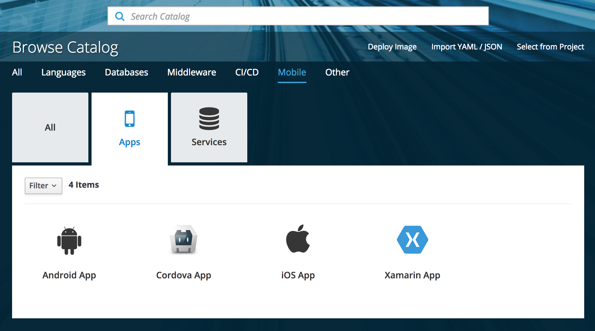
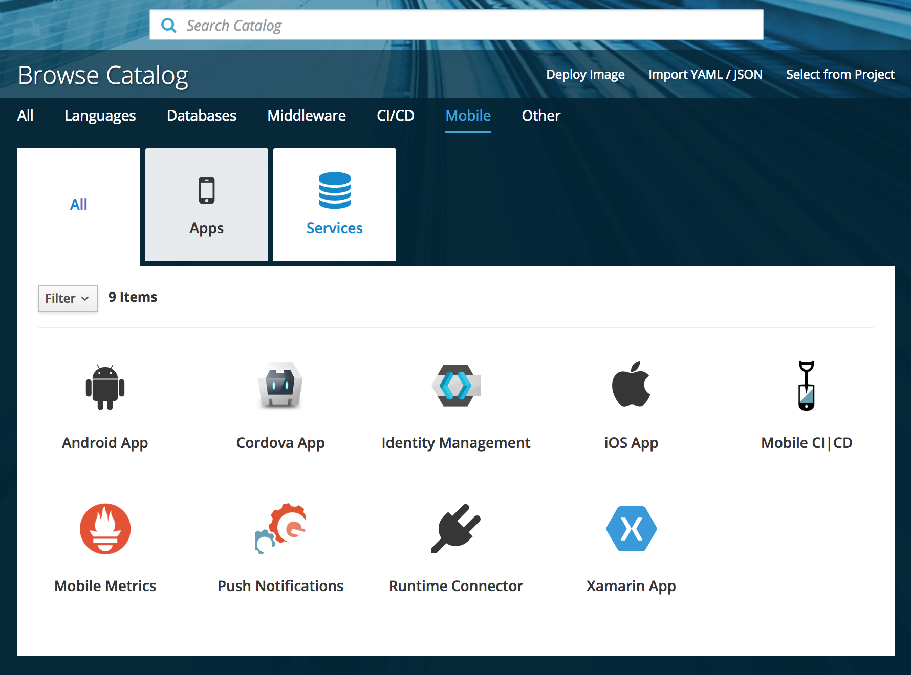

Getting Started with AeroGear Mobile Services
Introduction
AeroGear Mobile Services provides solutions to common development challenges faced by mobile developers. With OpenShift’s Container technology providing a secure, scalable backend platform, mobile developers can use the AeroGear SDK which supports a range of native (iOS & Android) and hybrid (Xamarin & Cordova) platforms to create secure, high quality apps and makes it easy to add features such as Push Notifications or Authentication.
This guide shows you how to:
-
Set up AeroGear Mobile Services on OpenShift
-
Create a Mobile Client and a Mobile Service (Identity Management)
-
Set up a local development environment
-
Configure the AeroGear showcase app for your mobile platform (Android, iOS, Cordova or Xamarin).
-
Run the showcase app and make calls to the Identity Management service.
Make sure you satisfy all the requirements listed in the Prerequisites and that you have a mobile app development environment configured. Some experience with OpenShift administration would also be helpful.
Setting up AeroGear Mobile Services on OpenShift
To use Mobile Services, you must run OpenShift and install an add-on which enables Mobile Services. For more information about OpenShift, see OpenShift website.
| AeroGear recommends running OpenShift using the method described in this document. However, there are many ways to run OpenShift, and Mobile Services is compatible with most of these methods. There is a known issue with Minishift that makes it unsuitable for mobile development. This issue is described in Issue 1287. |
Prerequisites
-
MacOS or Linux
Due to an OpenShift bug, Mobile Services will not run on RHEL/CentOS 7.4 or RHEL/CentOS 7.5. -
A system running OpenShift
oc cluster upas described in Local Cluster ManagementInstallation on macOS with Docker Machine has not been tested, use the Docker for Mac instructions when installing OpenShift. -
Use OpenShift client tools version 3.9 or later
OpenShift oc executable must be located in a system location that is known to all shells (e.g. /usr/local/bin) Ensure that you can run oc cluster up with no errors before moving on to the installation of AeroGear.
-
-
Access to a Docker Hub account. The installer uses Docker Hub as a source for AeroGear Docker images.
-
Ansible (version 2.6 or above)
-
For Linux (Fedora), add an extra port to the
dockerczone:
$ firewall-cmd --permanent --zone dockerc --add-port 443/tcp
$ firewall-cmd --reload-
A local mobile development environment for the platform you want to develop on.
Procedure
-
Clone the Mobile-core installer:
The installer configures the local development installation of AeroGear Mobile Services using ansible scripts in our mobile-core repo.
Clone this repo to your local machine and check out the 1.0.0 tag using:
git clone https://github.com/aerogear/mobile-core.git cd mobile-core git checkout 1.0.0 -
In the same directory, run the installer:
$ ./installer/install.shThe installer checks that valid versions of Ansible, Docker and the OpenShift Client Tools are installed.
-
Enter your Docker Hub login credentials when prompted. The installer checks these credentials are valid before continuing.
-
Accept the default values for the next set of prompts, unless you have specific requirements and understand the implications of changing the values. For more information about these values, see the DockerHub, Cluster IP and Wildcard DNS Host values section in Additional Resources.
If your Cluster IP address is reported as 127.0.0.1, the installation will not succeed. Check your network connection and restart the installer. DockerHub Tag (Defaults to latest): DockerHub Organisation (Defaults to aerogearcatalog): Cluster IP (Defaults to < Network IP Address >) Wildcard DNS Host (Defaults to nip.io):For more information, see the DockerHub, Cluster IP and Wildcard DNS Host values section in Additional resources.
The following installation can take a while the first time it runs, as it pulls a number of Docker images. Once completed successfully, this results in an output similar to the following:
TASK [output-oc-cluster-status : debug] ****************************************************************************************************************************************************** ok: [localhost] => { "msg": [ "Web console URL: https://192.168.37.1:8443/console/", "", "Config is at host directory /var/lib/origin/openshift.local.config", "Volumes are at host directory /var/lib/origin/openshift.local.volumes", "Persistent volumes are at host directory /var/lib/origin/openshift.local.pv", "Data is at host directory /path/to/mobile-core/ui/openshift-data" ] } PLAY RECAP *********************************************************************************************************************************************************************************** localhost : ok=44 changed=17 unreachable=0 failed=0The log above is displayed after a successful installation.
-
Verify the installation:
-
Browse to the Web console URL displayed at the end of the installation, and log in, accepting the self-signed certificate if displayed.
The developer login credentials are:
username: developer password: password
The service catalog is displayed
-
Check that the Mobile tab is displayed in the service catalog. If this tab is not displayed, wait a few minutes to make sure that the installation process has completed. If the Mobile tab still is not displayed, follow the troubleshooting steps below.
-

Additional resources
Troubleshooting
Firewall issues can occur with external devices trying to communicate with Mobile Services provisioned on a Linux machine. This is due to a number of Mobile Services using ports which are restricted to root users only. If you encounter these issues, you can add the ports to your firewall. Depending on the port your service uses, an example of the ports you may want to add to your firewall are:
| The following command will only add the specified port for the current session. If you reload your firewall or restart your machine the specified port will be restricted again. |
$ firewall-cmd --add-port 443/tcp $ firewall-cmd --add-port 80/tcp
DockerHub, Cluster IP and Wildcard DNS Host values
Use DockerHub Tag and DockerHub Organisation to configure the location of the APBs used by the service-catalog in the cluster you are creating:
DockerHub Tag (Defaults to latest):
DockerHub Organisation (Defaults to aerogearcatalog):The Cluster IP value defaults to the IP address of your primary network interface. If you want to connect to your OpenShift instance from a mobile device, ensure that your device is on the same network. Typically, you should ensure you are using the IP Address of your Wireless Adapter (if one exists):
Cluster IP (Defaults to < Network IP Address >)The Wildcard DNS Host option alters the wildcard DNS host you want to use:
Wildcard DNS Host (Defaults to nip.io):Registering a Mobile Client
After the setup is completed, the next thing you need to do is to register a Mobile Client for the mobile app that you are going to develop.
A Mobile Client in OpenShift is a representation of the mobile app that you are developing locally. Mobile Clients allow you to bind your mobile app to mobile services such as Identity Management, Push Notification, Mobile Metrics and others. This makes many of the common tasks associated with mobile development much easier and quicker to implement. For more information, please see Mobile Clients in OpenShift
Procedure
To create a Mobile Client in your OpenShift project:
-
Log into the OpenShift console.
-
Choose your project.
-
Click Add to Project and choose Browse Catalog from the options.
You can filter the catalog items to only show mobile specific items by clicking the Mobile tab.

-
Click the Apps tab and then choose the mobile platform (Android, iOS, Cordova or Xamarin) and follow the wizard.
On the wizard’s configuration screen, it is recommended that you input the name of the showcase application into the Package Name text box.
After the Mobile Client is provisioned, you can navigate to it from Project Overview. The Mobile Client view displays a list of mobile services that you can associate with the Mobile Client, and offers to provision any mobile service that is in the service catalog but is not currently provisioned.
Provisioning your First Service
Mobile Services provide commonly required features for mobile app development.
This section introduces the procedures for using Mobile Services by guiding you through the process using the Identity Management service. For a full list of available services, see Mobile Services
To provision the Identity Management mobile service:
-
Log into the OpenShift console.
-
Create a new project or choose an existing project.
-
Select Catalog from the left hand menu.
You can filter the catalog items to only show mobile specific items by selecting the Mobile tab.
-
Click Services and choose the Identity Management service.

-
Follow the wizard for provisioning that service.
If prompted to Create a Binding, choose Do not bind at this time.
| When completing the Identity Management provisioning wizard, you are prompted to enter configuration data. For the purposes of this guide, keep the default values. For more information about the Identity Management provisioning wizard fields, see Identity Management Configuration. |
Once the wizard steps are completed, navigate to the Project Overview in OpenShift to see the newly provisioned service. Provisioning a service may take some time.
Additional resources
Identity Management Configuration
-
Keycloak admin username: Username for Keycloak administration
-
Keycloak admin password: Password for the Keycloak admin user
-
Name of the Keycloak realm: Name of the keycloak realm. (defaults to current namespace)
| A realm manages a set of users, credentials, roles, and groups. A user belongs to and logs into a realm. Realms are isolated from one another and can only manage and authenticate the users that they control. |
-
Connect to an existing shared service: Select if you want to use an existing service and you have the URL and credentials to use that service.
-
URL of the shared service: Enter a value if you want to use an existing shared service.
Binding a Mobile Client
To use mobile services, you must represent your mobile app in OpenShift using a Mobile Client, and that Mobile Client must be associated with the mobile service. This association is called binding and once it’s done, your mobile app can use that service immediately.
To associate a Mobile Client with a mobile service:
Procedure
-
Navigate to the Overview of your OpenShift project.
-
Select the Mobile Client name listed in the Mobile Clients section.
-
Navigate to Mobile Services tab.

-
Click Create Binding and follow the Create Binding wizard to associate the Mobile Client with the Identity Management Service.
-
Fill out the binding parameters required by the Identity Management Service.
-
Choose the Keycloak client type. The default is
publicwhich allows the client to request tokens while typebearershould be used to bind to services that only need to verify tokens.The publicclient type should be used to bind to Mobile Clients because they only need to request tokens, but not verify them. When binding to other services you should use client typebearerunless they also need to authenticate.
The Identity Management service will now be expandable, details about the service can be viewed.

Configuring the Service
The following section will guide you through configuring the schema of the redirect url and web origin for a client in Keycloak. This is required to enable OpenID authentication. For an explanation of these terms, see Keycloak Documentation.
Configuring Keycloak
-
Log into the OpenShift console and navigate to the Project Overview.
-
Navigate to the Mobile Client screen.
-
Select the Mobile Services tab.
-
If a binding to the Identity Management service is in progress, a spinning icon is displayed to the right of the Identity Management entry. Wait for the binding process to complete.
-
If the Keycloak Realm URL URL is not visible, expand the Identity Management Service by clicking the > icon.
-
Click on the Keycloak Realm URL link to open the Keycloak Administration Console.
-
Log in to the Administration console using the credentials you specified at Provisioning (defaults to admin:admin)
-
Select
Clientsfrom the left navigation menu. -
Select your client from the list of clients. The name of your client is derived from the name of the Mobile Client, the name of the mobile development platform and the client type, for example
myapp-android-public. -
Add
<schema>:/callbackas an additional entry toValid Redirect URIs. See Choose the schema of a redirect url to determine the value for<schema>. -
Add
<schema>as an additional entry toWeb Origins. See Choose the schema of a redirect url to determine the value for<schema>. -
Save your changes.
-
Create a new user account as described in Creating a New User.
-
Set up credentials for the new user as described in User Credentials.
Setting Up your Local Development Environment
Supported Environments
In order to perform local development, you will need to have set up a local development environment or IDE. Mobile Services supports mobile app development across iOS Native, Android Native, Cordova and Xamarin.
| You can only use the AeroGear Xamarin SDK to create iOS and Android Apps. |
Running your First Mobile App
Downloading the Mobile Services Configuration File
-
Navigate to your project in OpenShift.
-
On the Overview screen, expand your Mobile Client to view the CLIENT INFO.
-
Copy the configuration to your clipboard.
-
Save the contents of the clipboard to a new file called
mobile-services.json.The mobile-services.json file is the link between your provisioned services on OpenShift and the mobile app you are developing. This file provides all required configuration to initialise the various SDKs and get them hooked up/connected to the back-end services. -
Follow the next specific additional instructions depending on your platform:
Using Self-Signed Certificates in Mobile Apps
| Before you can run a mobile app and connect to Mobile Services, you must configure self-signed certificates on the mobile device. |
Throughout the development lifecycle of a mobile app, a common requirement is to integrate and connect with back-end services in a secure manner. This is achieved using SSL/TLS.
However, in order for the client device to connect over SSL/TLS, it needs to trust the certificates used by the back-end services, which are signed by a certificate authority. Most client devices have a list of well-known and trusted certificate authorities pre-installed and this allows the client devices to verify the certificates used by the back-end services.
However, this normally doesn’t work in a development environment, such as a local OpenShift cluster as it uses self-signed certificates which are not signed by any of the trusted certificate authorties. This means by default the client devices won’t be able to establish secure connections with the back-end services that are running on a local OpenShift cluster.
To work around the problem, you must manually extract the root certificate from the cluster, install it on the device and mark it as trusted.
1. Extracting the OpenShift Root Certificate Authority Cert
-
Log into OpenShift as the admin user:
$ oc login -u system:admin -
Run the following command:
$ oc get secret router-certs --template='{{index .data "tls.crt"}}' -n default | \ base64 --decode | sed -e '1,/^-----END RSA PRIVATE KEY-----$/ d' > /tmp/localcluster.crtThe resulting file is located in the
/tmpdirectory.
Running the app in an emulator
From the showcase app:
-
Press the Authenticate menu item. A login screen is displayed.
-
Log in using the credentials you set up with setting up the service.
Once the login is successful, you will be taken back to the showcase application where you can see the roles and basic information of the user you have just logged in with.